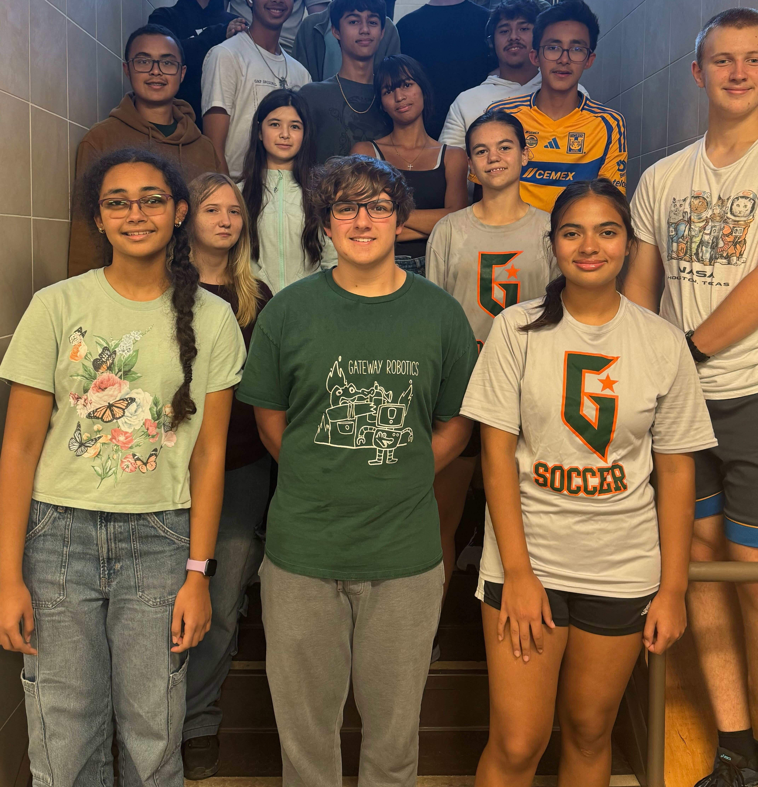
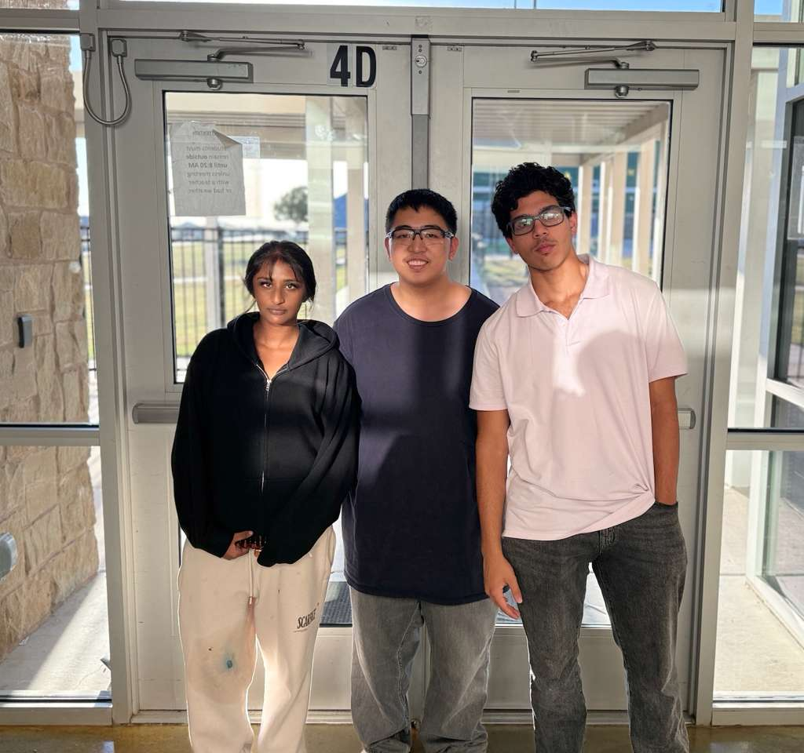
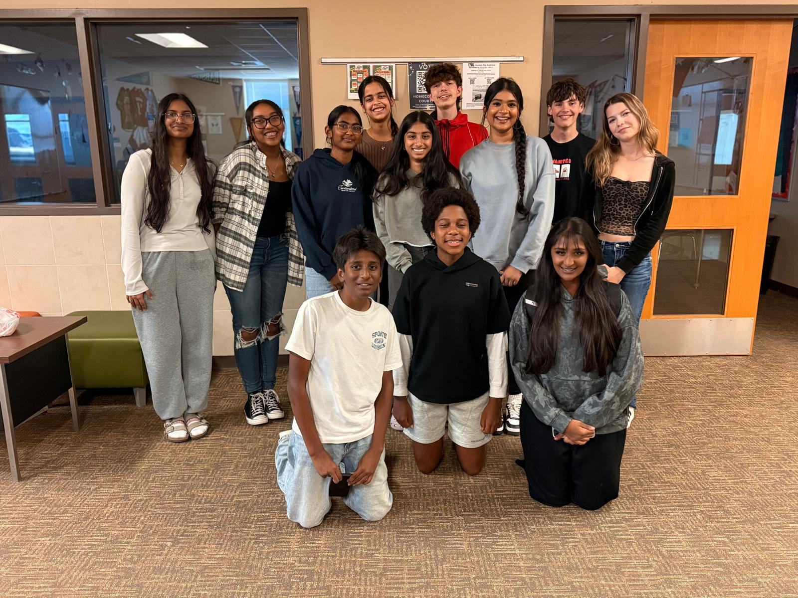
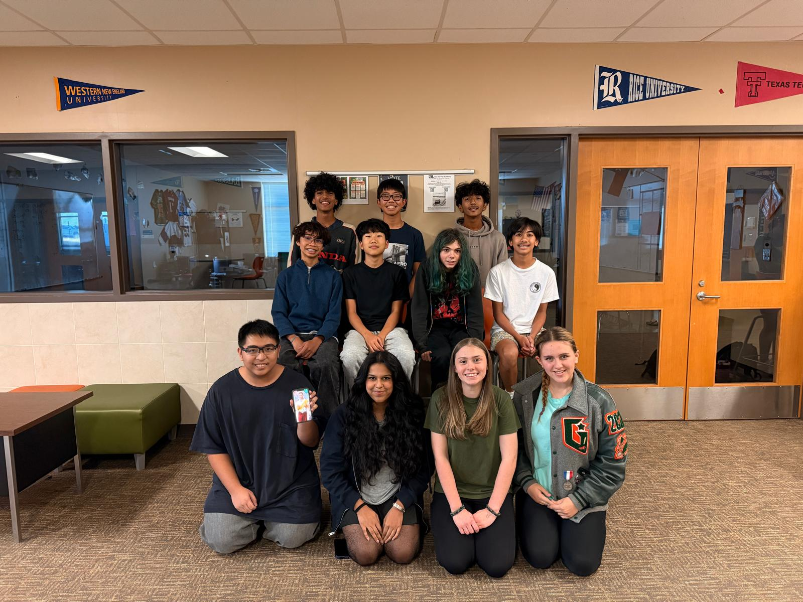
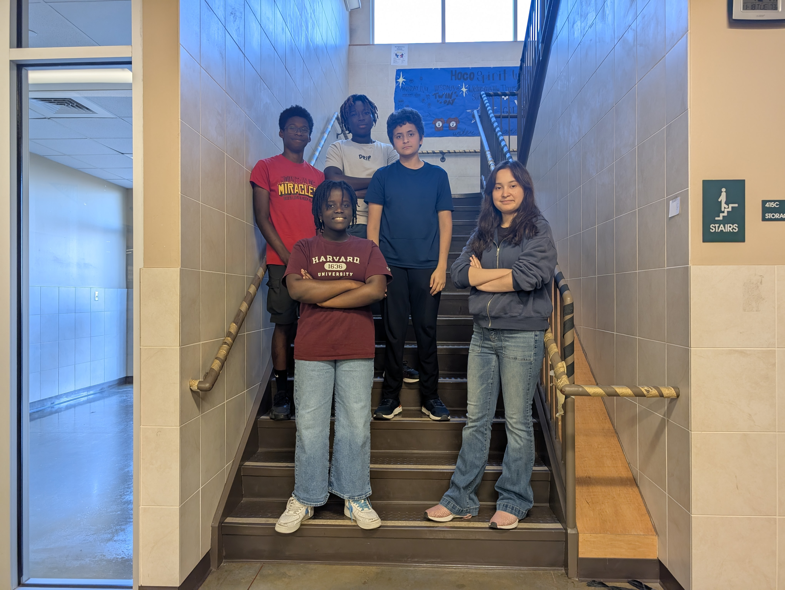

About Our Teams
2025 BEST Robotics Teaser
Website
The Website Team at Gateway College Prep High School ensures that the robotics program is accessible online. Combining creative design with technical knowledge, they build and maintain visually appealing webpages, keeping content updated and easy to navigate. Their work enables students, mentors, judges, sponsors, and the community to explore team achievements, view competition updates, and learn about events. Collaboration with marketing, AV, and exhibit teams guarantees effective communication and consistent messaging. The team’s commitment extends Gateway’s robotics spirit beyond physical spaces, offering an online showcase that inspires interest and informs visitors. Their tailored approach helps prospective students, supporters, and everyone involved stay current and connected. By maintaining a professional web presence, the Website Team demonstrates the importance of technology, outreach, and information-sharing, turning the robotics program’s accomplishments into a digital experience that reflects the dedication and passion of Gateway College Prep’s students and leaders.

Engineering
The engineering team, also known as the build team, is a core part of Gateway College Prep’s BEST robotics program and is responsible for designing and constructing the robot. They build a strong wooden frame using thinner plywood to conserve material for wheels and gears while keeping the robot durable. Working closely with the software team, they connect hardware and code so that every motor and servo responds correctly during matches. They also use 3D modeling tools to prototype mechanisms, test ideas, and refine designs before full construction. This season, the team is introducing a functional claw that has not appeared on their robots for several years and will teach future members how to improve it. Because they regularly operate power saws, drills, and other tools, safety is always a top priority. Leads make sure every student is trained, comfortable with equipment, and monitored while working. Protective gear, including safety glasses and gloves, is required during all build sessions.

AV
Gateway College Prep High School’s Audio-Visual Team brings creativity and technical skill to every robotics project, telling the program’s story with impactful media. Renowned for high-quality videos and presentations, the AV group captures each build phase from design decisions to engineering challenges and competition preparation making the robotics experience engaging and memorable. Their process involves close collaboration with team members, mentors, and marketing staff to ensure accuracy, excitement, and a unique communication style. Each video serves as a marketing tool, helping judges and sponsors connect with the team, while also enhancing school events and community outreach. The team blends artistry with technological precision, turning every robotics effort into a compelling narrative. Their work energizes and educates viewers, offering behind-the-scenes insights that spotlight talent and teamwork. Ultimately, the AV department amplifies the achievements of Gateway’s robotics program, ensuring the story is shared with maximum impact at school and in the community.

Exhibit
The Exhibit team is a fundamental component of Gateway College Prep’s BEST Robotics team, serving as the creative force that brings the team’s identity and engineering story to life. This team is responsible for designing and creating the exhibit booth. This team is divided into subsections or subteams responsible for different tasks; the various teams are Artistic Design, Prototype, Painting, Poster/Visual Design, and Presentation. The artistic subteam is developing color schemes, lighting placement, and props that match this theme so the booth tells a clear and memorable story about the team. For souvenirs, the team is creating keychains featuring the school mascot, the gator, to help visitors remember Gateway College Prep after they leave the exhibit. The Exhibit team’s biggest task is planning and designing the exhibit booth from initial sketches to the final setup on competition day. Their goal this year is to place in the top 25% of competitors, and they mainly communicate via Slack and email to coordinate deadlines, share designs, and assign responsibilities.

Marketing
At Gateway College Prep High School in Georgetown, Texas, the Marketing Team is essential in promoting our robotics program, using creativity and teamwork to highlight achievements in dynamic ways. They design vibrant posters, create engaging social media campaigns, and organize events, ensuring every robotics milestone is celebrated and publicized. Exploring innovative strategies like digital campaigns, video storytelling, and live demonstrations, the team keeps robotics excitement strong among students, parents, and community partners. Their commitment not only raises awareness but also builds a supportive culture that extends beyond the club, showcasing the spirit of technology and creativity at Gateway College Prep. Through seamless collaboration and innovative ideas, they shine a unique spotlight on our program, capturing lasting connections that emphasize teamwork, perseverance, and ingenuity. Every student is recognized and inspired to participate, while the Marketing Team transforms robotics into a central part of Gateway’s identity, making our story stand out in remarkable ways.

Software
The software is a fundamental component of Gateway College Prep’s BEST robotics team. This team codes the software that enables the robot to drive and use its arm and claw. The development tool they are using for the software is the web accessible VEXcode V5 IDE. They integrate the software with the robot’s hardware by bringing functionality and transforming the physical components into a fully functional machine. Since they also work with the robot’s hardware, they collaborate closely with the engineering team. They utilize Slack for effective communication within the team and request information from the build team to keep them all on the same page. They also use Slack and correct file naming conventions to manage version control and track project progress. To ensure the robot runs reliably in the competition, they test the code on the actual robot and within the 3D model of the robot. Challenges they encountered include devising the logic for configuring the robot and its controls. They resolved those problems by testing and revising, and by also working with the drivers to troubleshoot any errors.
